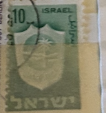
| SOURCE | TITLE| IMAGE MATCH | click to source page |
| eBay | ISRAEL #281 1965 10a BET SHEAN MINT VF NH O.G | eBay | 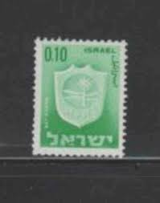 |
| Mystic Stamp | 281//87 - 1966 Israel - Mystic Stamp Company | 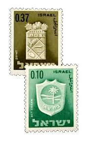 |
| საქართველოს ეროვნული ბიბლიოთეკა | Iverieli: ისრაელში გამოშვებული მარკა | 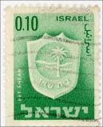 |
| Cherrystone Auctions | Versailles Collection Part III; U.S. & Worldwide Stamps & Postal History - November 1-3, 2005 - ISRAEL |  |
| eBay | T8-127) 1965 Israel 10a green bet shean MUH | eBay | 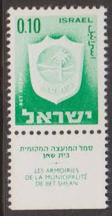 |
| Stamps, նամականիշներ, seëls | 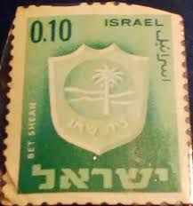 | |
| Cherrystone Auctions | U.S. & Worldwide Stamps & Postal History - September 13-14, 2017 - ISRAEL |  |
| Colnect | Israel : Stamps [Year: 1975] [1/9] : Colnect 📮 | 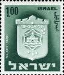 |
| eBay | Israel - 1965 -1975 Civic Arms | eBay | 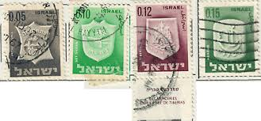 |
| HipStamp | Israel 22/10/65 Towns 1.00 Plate Block MNH Bale Value $ 10.00 | Middle East - Israel, Stamp / HipStamp |  |
| Shutterstock | Israel 1966 February 2 10 Agorot Stock Photo 2274366469 | Shutterstock | 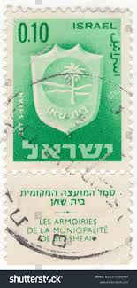 |
| eBay | Two Israel 1966 FDCs - Coats of arms with tabs - Unaddressed | eBay | 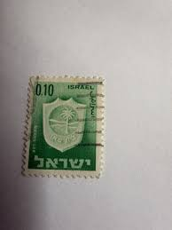 |
| HipStamp | Antonios Philatelics / HipStamp | 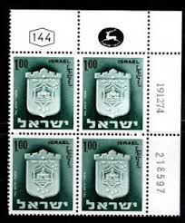 |
| Shutterstock | Shekel 1: Over 261 Royalty-Free Licensable Stock Photos | Shutterstock | 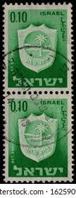 |
| Alamy | ISRAEL - CIRCA 1966: stamp printed by Israel, shows Theodor Herzl, circa 1966 Stock Photo - Alamy |  |
| Shutterstock | 1+ Thousand Coat Arms Israel Royalty-Free Images, Stock Photos & Pictures | Shutterstock |  |
| RealBanknotes.com | RealBanknotes.com > Israel p63: 20 New Sheqalim from 2008 | 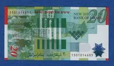 |
| Greysheet | Bank of Israel 20 new sheqalim B441a,B41a 2008 Sig 13 Fischer/Fogel Intro 13 04 2008 Pricing Guide | The Greysheet | 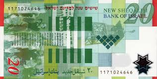 |
| eBay | Circulated 1973 Israeli Paper Money for sale | eBay | 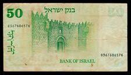 |
| בנק ישראל | Series B of the Lira - Representative Figures Series | בנק ישראל - הבנק המרכזי של ישראל | 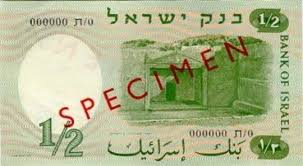 |
| החברה הישראלית למדליות ולמטבעות | 1/2 Israeli Lira | 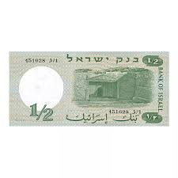 |
| eBay UK | Israel 24 with Tab fine used / cancelled 1949 Old Coins (10256672 | eBay UK | 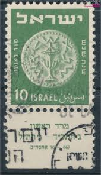 |
| Colnect | Stamp: Ashdod (Israel(Town Emblems (1965-1975)) Mi:IL 328x,Sn:IL 283,Yt:IL 278,Sg:IL 301,Isr:IL 343 📮 |  |
| Alamy | Postage stamps of the Israel. Stamp printed in the Israel. Stamp printed by Israel Stock Photo - Alamy |  |
| Shutterstock | 3+ Thousand Israel Postmark Royalty-Free Images, Stock Photos & Pictures | Shutterstock |  |
| eBay | Lot 2 Billets Israel 10 Lirot 1973 | eBay | 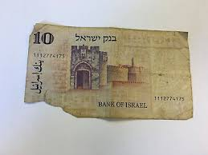 |
| eBay | Israel - 1965 - Civic Arms - 0.15(£) - #2325 | eBay | 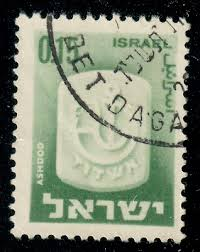 |
| Dreamstime.com | Tel Stamp Stock Photos - Free & Royalty-Free Stock Photos from Dreamstime | 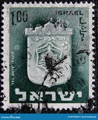 |
| Shutterstock | 73+ Thousand Old Town Israel Royalty-Free Images, Stock Photos & Pictures | Shutterstock | 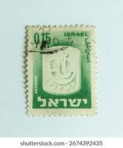 |
| eBay | 20 New Shequalim 2008 Polymer Banknote. Not UNC. 60th Israel Anniversary | eBay | 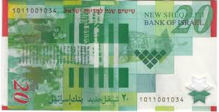 |
| eBay | Banknote 1/2 Lira 1958 - Israel 🇮🇱 | eBay | 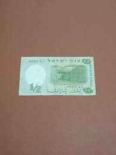 |
| ebid.net | ISRAEL, Town Crests, Ramat Gan, dark green 1969, 0.80Lira, #2 on eBid United Kingdom | 197284536 | 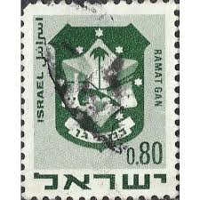 |
| eBay | Israel 1965 COAT OF ARMS 1.00 VALUE #290 Plate Block of 4 | eBay | 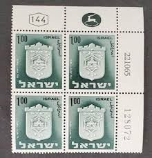 |
| eBay | ISRAEL - 2008 20 LIROT SHARETT "POLYMER" 60th ANN BANKNOTE. Pick 63. UNC COND | eBay | 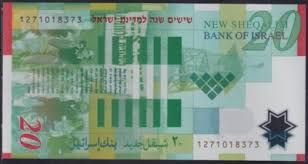 |
| Alamy | Israeli coins hi-res stock photography and images - Alamy | 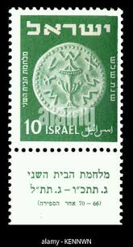 |
| eBay | Israel Scott #281 Town Emblem Single Missing Inscription/Denomination Error!! | eBay | 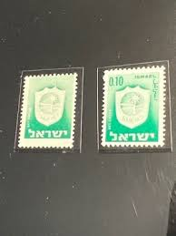 |
| eBay | Preços baixos em 1986 Cédulas de Israel | eBay | 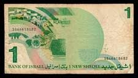 |
| Dreamstime.com | Israel Circa 1949: a Post Stamp Printed in Israel Showing a Coin with Ornate Lid Oil Jug Editorial Stock Photo - Image of numismatic, money: 234079283 | 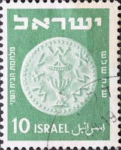 |
| eBay | ISRAEL, BANK OF ISRAEL 1958 / 5718 SEQUENTIAL PAIR OF 1/2 LIRA. PMG-64. P-29a. | eBay | 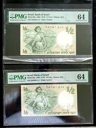 |
| eBay | ISRAEL 1950 #19 BOOKLET PANE OF 6 "ISRAEI" ERROR FROM B6B BOOKLET (SEE PHOTO) | eBay | 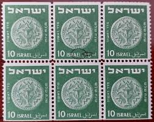 |
| Wikimedia.org | File:בול של דואר ישראל, הנושא את סמל העיר אשדוד.jpg - Wikimedia Commons |  |
| GetArchive | Stamps of Israel -shavuot 85 - PICRYL - Public Domain Media Search Engine Public Domain Image | 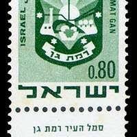 |
| החברה הישראלית למדליות ולמטבעות | One New Sheqel - Rambam | 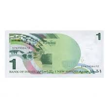 |
| HipStamp | Israel - #393 Arms of Ramat Gan - Used | Middle East - Israel, General Issue Stamp / HipStamp |  |
| eBay | Uncertified 1978 Banknote Israeli Paper Money for sale | eBay | 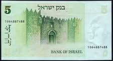 |
| Numista | 10 Sheqalim (Theodor Herzl & Zion Gate) - Israel – Numista | 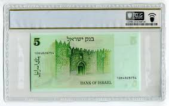 |
| ווינרס מכירות פומביות | 5 Lira Banknote. Ango-Palestina, 1948 - Winner'S Auctions | 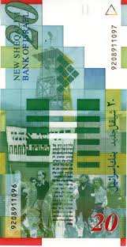 |
| eBay | Uncertified 1978 Israeli Paper Money for sale | eBay | 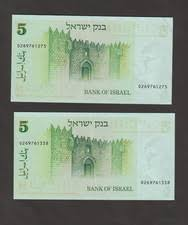 |
| Tavex OY | Israeli sheqel - Tavex - Valuutta, Kulta, Hopea | 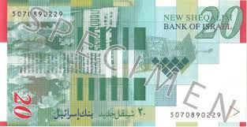 |
| Numista | ½ Israeli Pound (Walks of Life - Pioneer Woman) - Israel – Numista | 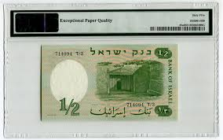 |
| Shutterstock | 2+ Hundred Bar Kokhba Revolt Royalty-Free Images, Stock Photos & Pictures | Shutterstock | 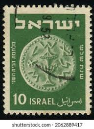 |
| eBay | SILVER,ISRAEL, Second 2nd Series Banknotes, 5 Color Silver , Box, 999 Mint 1959 | eBay | 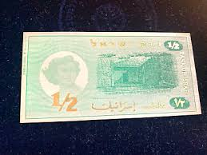 |
| eBay | Israel: 10 Lirot 1973 | eBay | 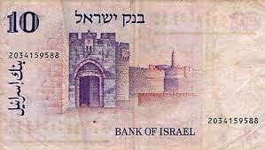 |
| eBay | Israel - 1965 -1975 - Civic Arms - 0.15£ - #01 | eBay | 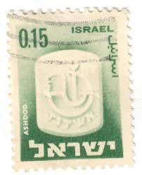 |
| eBay | Banknotes of All Nations Israel 1978 / 5738 1 sheqelim P 43 UNC | eBay | 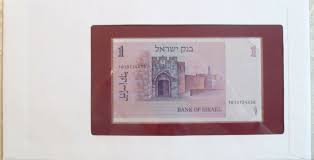 |
| | Katz Auction | Israel 20 New Sheqalim 2008 JE 5768 | Katz Auction | 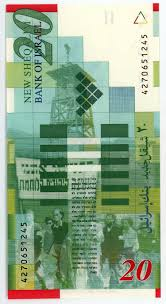 |
| eBay | שטר חדש 5 חמישה שקלים חיים ויצמן 1978 ירושלים ישראל מדינה ישראל ישן קדום | eBay | 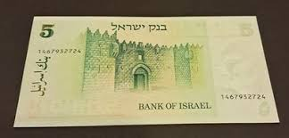 |
| MA-Shops | Israel 1/2 Lira 1958 P.29a unc / GEM UNC | MA-Shops | 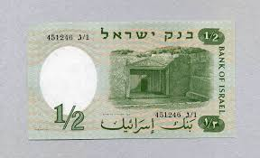 |
| eBay | original 20 New Sheqalim Shekel Banknote Polymer 60th Anniversary Israel | eBay | 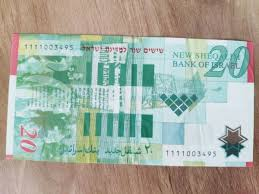 |
| GetArchive | 14 Coats Of Arms Of Cities In Israel On Stamps Image: PICRYL - Public Domain Media Search Engine Public Domain Search} |